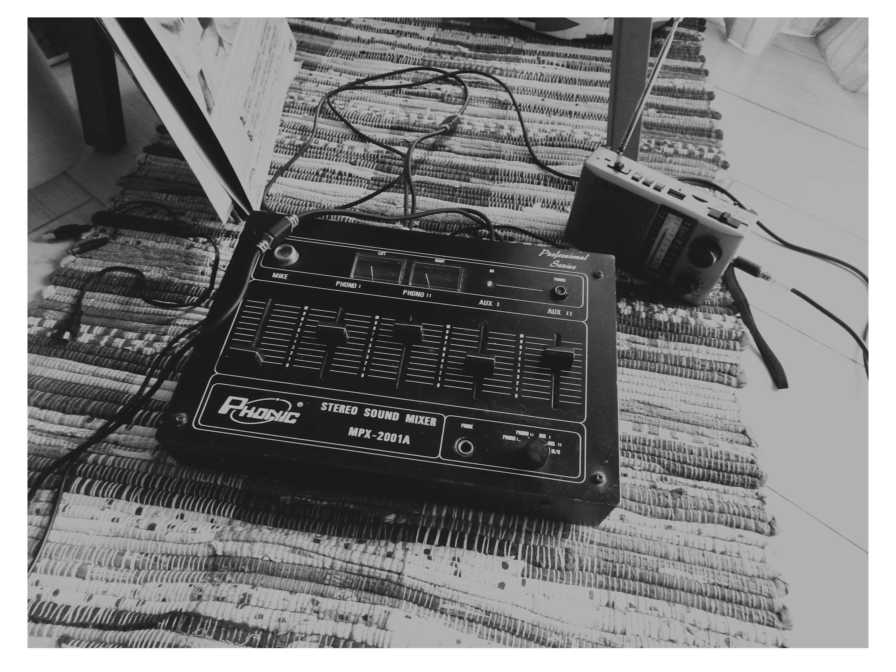

Schubert & Radio FM
at 19:20
A man shouting !warning! - the melodies of Schubert getting scratched on a vinyl
An experimental recording
This recording was made with two audio sources: a radio receiver and a record player both connected to an audio mixer.
The receiver is tuned and changing volume constantly, following a score written for radio. The user of the record player
keeps changing and swinging the record, creating different textures to accompany the radio receiver.
